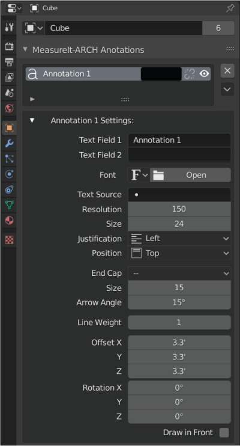

Annotations
Add Annotations
Annotation:
- Adds an Annotation to the selected Object or Vertex.

Annotation Style (Color Swatch Icon):
- Style to be assigned to new Annotation on creation.
Annotation Menu

- Color: Sets Annotation Color.
- Link Style (Link or Broken Link Icon): Toggles if this Annotation uses a Style.
- Visibility (Eye Icon): Toggles the Annotations visibility.
- Delete (x Icon): Deletes the Annotation.
- Annotation Menu (Chevron Icon)
- Add Text Field: Adds a text field to the selected Annotation.
- Remove Text Field: Removes the last text field from the selected Annotation.
Annotation Settings

- Text Field: Sets the text for the annotation.
- Annotations can have multiple text fields, each new text field will display as a new line in the Annotation Text.
- Font: Lets you select a custom font for the Annotation from your system.
- Text Source: MeasureIt_ARCH can pull annotation text from an objects Custom Properties metadata. This field defines the source custom property.
- If two text fields are available, MeasureIt_ARCH will use the first to display the custom properties name, and the second to display the value.
- If only one text field is available, only the value will be displayed.
- Size: The Annotation font size.
- Resolution: The Annotation font resolution.
- Justification: Text Justification relative to the end of the Annotation leader line (Left, Center, Right).
- Position: Text Position relative to the end of the Annotation leader line (Top, Middle, Bottom).
- Endcap
- Dot: Adds a Circle to the end of the Annotation Leader.
- Triangle: Adds an Arrow to the end of the Annotation Leader.
- Endcap Size: Sets the size of the Dimension Leader Endcap.
- Line Weight: Line Weight of the Annotation leader.
- Offset: The XYZ offset from the object or vertex that the annotation is attached to.
- Rotation: The XYZ rotation of the annotation text.
- Draw In Front: Makes this element Ignore Visibility tests.